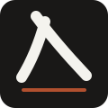
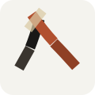
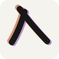
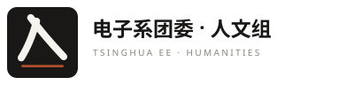
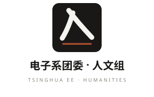

三个方向，都基于同一个符号：把「人」做成组徽。方块构图，缩到 16px 仍能辨认，也能和现有的方块文字徽标平滑替换。
页面里的中文由浏览器渲染，不会有 SVG 里字体缺失的问题。
一撇一捺用等粗圆头笔画写出来，两笔同源起笔、底端向左右张开，底下压一条陶土色横线当底座。

笔画像两张裁下来的纸条，各自微微歪着，捺用陶土色，上端压一截胶带。

印刷套色没对准：陶土与紫各印一次、各自错开，墨色正版压在最上面。

徽标 + 字的固定搭配。横版用于顶栏/文档抬头，竖版用于海报与落款。

